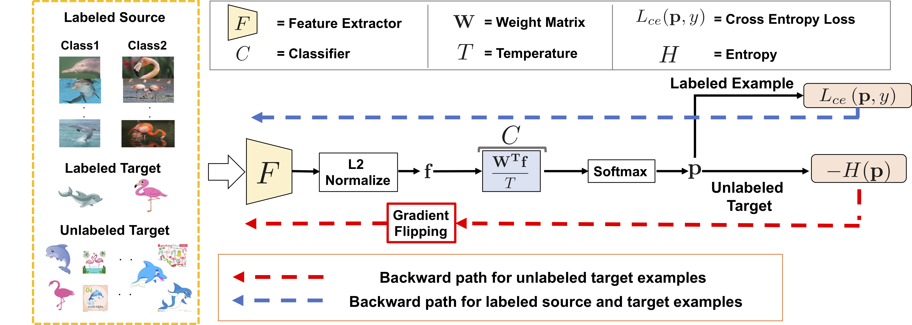

Semi-supervised Domain Adaptation via Minimax Entropy (ICCV2019)
Kuniaki Saito1, Donghyun Kim2, Stan Sclaroff1, Trevor Darrell2,Kate Saenko1
1: Boston University, 2: University of California, Berkeley
[Paper] [Code]

Abstract
Contemporary domain adaptation methods are very effective at aligning feature distributions of source and target domains without any target supervision. However, we show that these techniques perform poorly when even a few labeled examples are available in the target. To address this semi-supervised domain adaptation (SSDA) setting, we propose a novel Minimax Entropy (MME) approach that adversarially optimizes an adaptive few-shot model. Our base model consists of a feature encoding network, followed by a classification layer that computes the features' similarity to estimated prototypes (representatives of each class). Adaptation is achieved by alternately maximizing the conditional entropy of unlabeled target data with respect to the classifier and minimizing it with respect to the feature encoder. We empirically demonstrate the superiority of our method over many baselines, including conventional feature alignment and few-shot methods, setting a new state of the art for SSDA.
Overview
Classifier tries to "maximize" entropy of the unlabeled target examples while the feature encoder tries to "minimize" it. The overview of the method is described below. We utilize the architecture which has L2 normalization before last fully connected layer.

Results
Our method performed better than other baselines (See left table). The obtained features are well-clustered with our method (See right figures). In the top row, the target features are visualized. Different colors denote different classes. The black plots are the prototype vector of our network. We can see the features are well-clustered around the prototype. In the bottom row, we show target (blue) and source (red) features. With our method, the target features are well-aligned with source ones.
Code
Reference
@article{saito2019semi,
title={Semi-supervised Domain Adaptation via Minimax Entropy},
author={Saito, Kuniaki and Kim, Donghyun and Sclaroff, Stan and Darrell, Trevor and Saenko, Kate},
journal={ICCV},
year={2019}
}